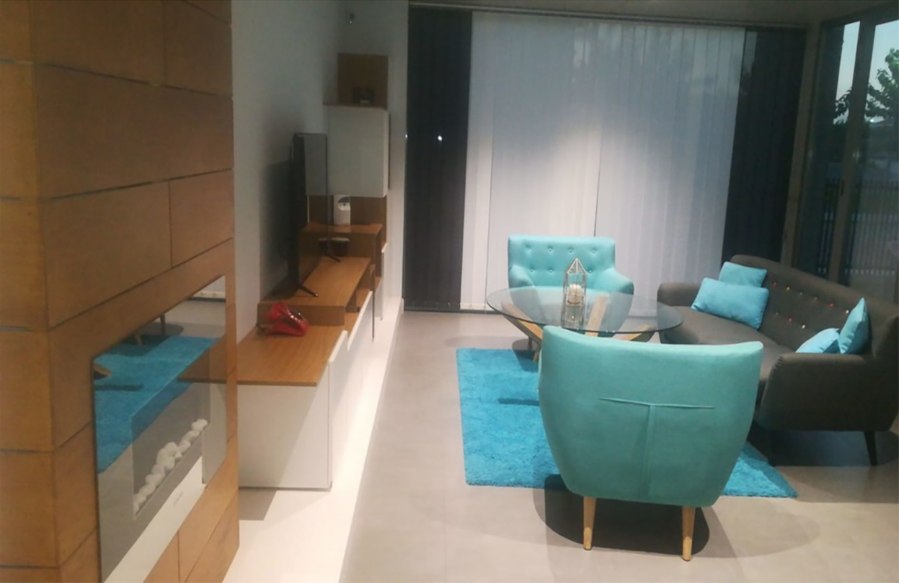
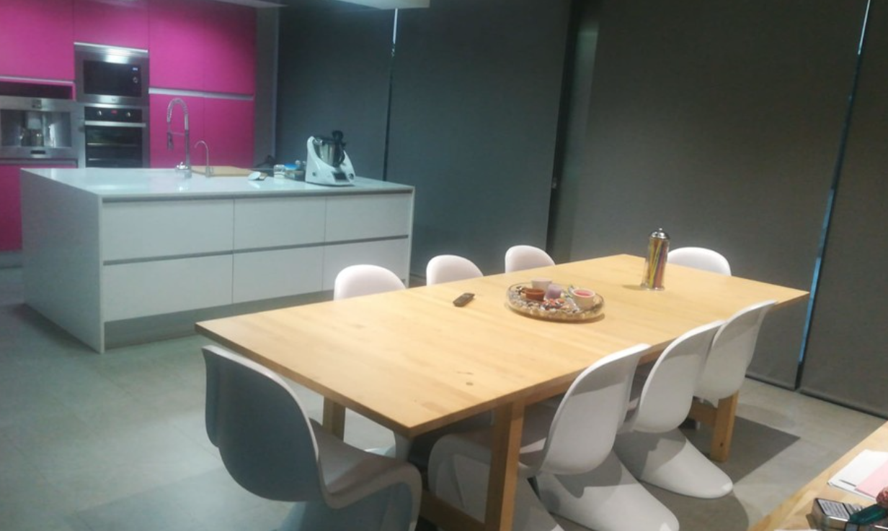

Chalet Múlticolor
El proyecto de reforma en el chalet ha sido un gran desafío para nosotros como diseñadores interiores. Hemos trabajado desde el diseño previo en 3D hasta el acabado final de la obra para crear un espacio moderno y acogedor.
El proceso comenzó con la creación de un diseño previo en 3D, donde se planificaron los diferentes elementos decorativos y se establecieron las proporciones y dimensiones del espacio. El diseño previo en 3D nos permitió visualizar el proyecto en su totalidad antes de comenzar las obras, lo que nos permitió identificar cualquier problema potencial y resolverlo antes de que fuera demasiado tarde.
Una vez que se aprobó el diseño previo, comenzamos con las obras. El salón fue uno de los primeros espacios en ser renovado. Se eligió una decoración minimalista que jugaba con los elementos de color. Los sillones azules y grises, crearon un contraste fresco y moderno con el resto de los elementos en tonos blancos y maderas. El suelo de madera y las paredes blancas consiguieron un equilibrio cálido y acogedor.
La cocina fue el siguiente espacio en ser renovado. Se eligió una isla central como elemento clave de la cocina, donde se sitúan las sillas blancas y la mesa de madera. Los armarios están pintados de un color fucsia intenso, dando un toque de originalidad y alegría al ambiente. El suelo y las paredes son de tono gris, creando un contraste con los armarios y dando sensación de amplitud.
Completadas las obras, se procedió con el acabado final. Se instalaron electrodomésticos de última generación y se eligió una encimera de granito para hacer la cocina más práctica y fácil de usar. Además se incluyeron varios almacenamientos, como cajoneras y estantes, para tener todo en su lugar y a mano.
En cuanto al salón, se eligió una iluminación cálida y acogedora para crear un ambiente relajado y agradable. Se utilizó una combinación de luces indirectas y focos para crear un efecto dramático y resaltar los elementos decorativos.

En resumen, el proyecto de reforma en el chalet ha sido un gran éxito gracias al diseño previo en 3D y a la planificación cuidadosa de cada detalle. Hemos conseguido un espacio moderno y acogedor, donde la decoración juega con los elementos de color para crear un ambiente equilibrado y armonioso. El diseño previo en 3D ha sido esencial para visualizar el proyecto en su totalidad antes de comenzar las obras, lo que nos ha permitido identificar y resolver cualquier problema potencial.
En el salón, los sillones azules y grises aportan un toque fresco y moderno al ambiente, mientras que la madera del suelo y las paredes blancas consiguen un equilibrio cálido y acogedor. La iluminación cálida y acogedora ha conseguido un ambiente relajado y agradable para disfrutar de momentos de descanso y relajación.
En la cocina, la isla central es el elemento clave, con sillas blancas, mesa de madera y armarios fucsia, que aportan un toque de originalidad y alegría al ambiente. El suelo y las paredes grises crean un contraste y dan sensación de amplitud. Los electrodomésticos de última generación y la encimera de granito hacen la cocina más práctica y fácil de usar.
En general, el proyecto ha conseguido un espacio moderno y acogedor, donde la decoración juega con los elementos de color para crear un ambiente equilibrado y armonioso. El diseño previo en 3D ha sido esencial para asegurar que cada detalle estuviera planificado y ejecutado con precisión, lo que ha permitido lograr un resultado final impresionante.